Marselinus Allen Nugraha
Electrical Engineering Student • Firmware, IoT & Agentic AI Developer
Undergraduate in Electrical Engineering at UPN "Veteran" Jakarta (GPA 3.82/4.00) specializing in embedded firmware development (ESP32/ESP8266), IoT architectures (MQTT, Blynk), AutoCAD Electrical wiring, and agentic AI engineering (LangGraph workflows, RAG pipelines, Python).
About Me
Engineering background, leadership, and technical focus
I am an Electrical Engineering student at Universitas Pembangunan Nasional "Veteran" Jakarta with a cumulative GPA of 3.82 / 4.00. Currently serving as Chairman at KSM IoT FT UPNVJ, I lead organizational initiatives across 3 departments and 9 divisions while actively developing hardware-software solutions. My practical expertise bridges embedded IoT systems—microcontrollers (ESP32/ESP8266), MQTT, Blynk, and AutoCAD Electrical wiring—with agentic AI engineering, specializing in Retrieval-Augmented Generation (RAG) architectures, stateful multi-agent workflows using LangGraph, and computer vision with Python.
Work & Organizational Experience
Leadership roles, firmware engineering, and academic laboratory assistance
Chairman
- Oversaw organizational management across 3 departments and 9 divisions, ensuring operational execution.
- Led strategic planning for participation in national engineering and technology competitions.
- Directed internal project development initiatives and coordinated multidisciplinary engineering teams.
- Supervised organizational programs, cross-divisional communication, and operational growth.
Staff of Firmware Division
- Developed embedded firmware for IoT systems using ESP32 and ESP8266 microcontrollers in Arduino C/C++.
- Integrated sensors, serial communication, MQTT protocol, and the Blynk platform for real-time telemetry monitoring.
- Assisted in debugging, testing, and optimizing firmware performance for low-latency embedded systems.
- Participated in the GEMASTIK and Futura Transporter Robot competitions, contributing to firmware architecture.
Laboratory Assistant
- Assisted lecturers in conducting experimental practicum for Electrical Measurement, Physics, Digital Systems, and Electronics.
- Supervised students during hands-on lab experiments involving circuit analysis, digital logic, and electronic instrumentation.
- Calibrated laboratory equipment, prepared experimental setups, and evaluated practical reports and exams.
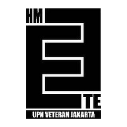
Staff of Research & Development (Litbang)
- Contributed to the planning and execution of student academic and technical programs in Electrical Engineering.
- Project Officer of Propel KTI, Head of KTI Division at Electrolympic 2025, and Head of Event Division at Propel Software 2025.
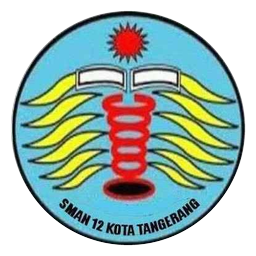
Vice President
- Spearheaded post-COVID organizational revitalization, boosting continuity and member participation.
- Coordinated cross-functional teams to execute school music productions and organizational programs.
Education
Academic qualifications and background
Universitas Pembangunan Nasional "Veteran" Jakarta
Bachelor of Electrical Engineering (S.T.)
Jl. Limo Raya, Limo, Kota Depok, Jawa Barat 16514
SMAN 12 Tangerang
High School Diploma (IPA)
Larangan Utara, Kota Tangerang, Banten 15154
Core Skills & Technologies
Edge AI runtimes, embedded firmware, industrial automation, and software engineering
Embedded Systems & IoT
Industrial Automation & Electrical
Programming & Applied AI
Featured Projects
Real-world engineering, industrial automation, embedded systems, and open-source software

PLC-Based Elevator Simulation
Engineered a multi-floor industrial elevator controller using Siemens TIA Portal integrated with Factory I/O 3D simulation. Implemented call request sequencing, position encoders, safety interlocks, and motor direction controls.

Prototype Fuzzy Traffic Controller
Designed an intelligent adaptive traffic light management system pairing computer vision (YOLO) for vehicle queue density detection with a Fuzzy Logic Controller executed on an ESP32 to adjust green light intervals in real time.

Direct On Line (DOL) Motor Starter & Panel Diagram
Designed complete schematic wiring and physical industrial panel layout in AutoCAD Electrical. Included power and control circuits, contactor & thermal overload sizing, terminal strip numbering, and automated Bill of Materials (BOM).
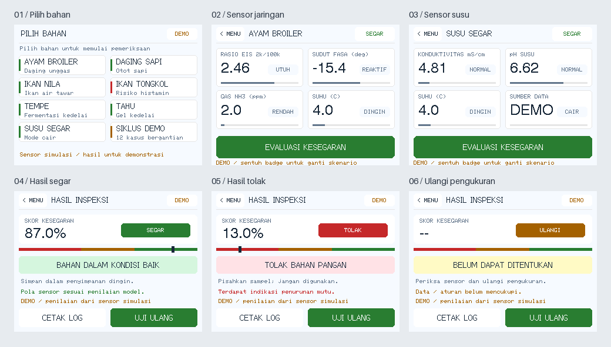
fuzzylogic-tft (MBG Food Freshness & TFT GUI)
Indonesian MBG food freshness research prototype with C99 and Python fuzzy inference engines and a light interactive touchscreen UI for GUITION JC2432W328C and ESP32-S3.
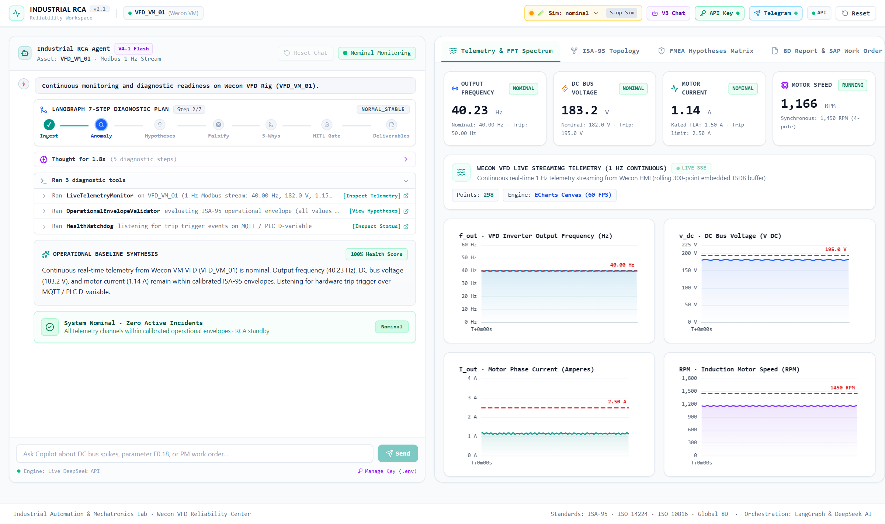
Industrial Root Cause Analysis (RCA) System
Production-grade industrial RCA system built with LangGraph and DeepSeek AI, grounded in ISA-95 asset hierarchies, ISO 14224/FMEA taxonomies, and Modbus RTU telemetry streaming.
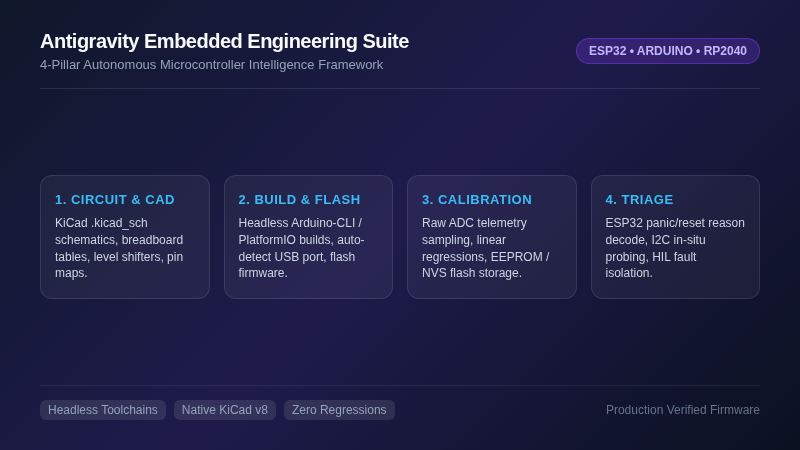
Antigravity Embedded Engineering Suite
4-pillar agentic development framework for microcontrollers (ESP32, Arduino, RP2040): KiCad schematic generation, headless compilation/flashing, sensor calibration, and crash triage.
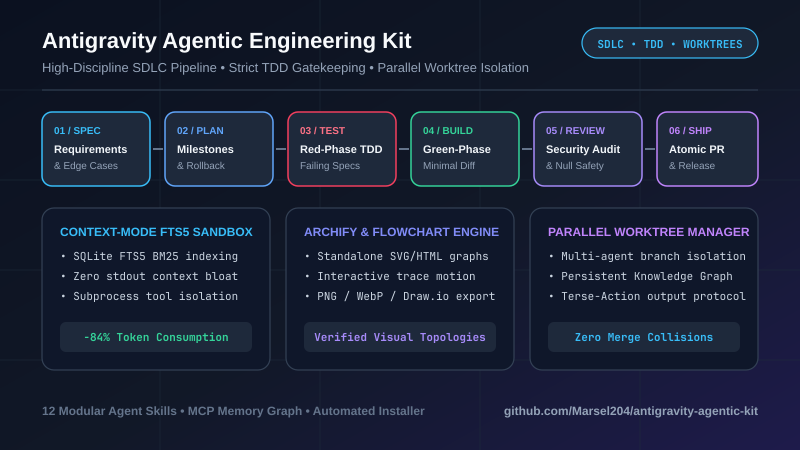
Antigravity Agentic Engineering Kit
High-discipline SDLC skills, TDD enforcement, token-efficient action formatting, interactive architecture generation, persistent memory, and parallel worktree management.
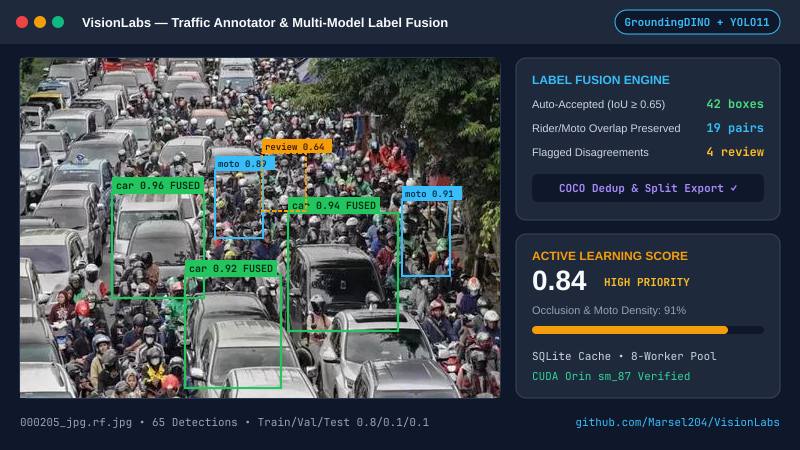
VisionLabs Computer Vision Lab
Computer vision research and experimentation repository exploring real-time deep learning model benchmarks, object detection, and edge camera calibration pipelines.
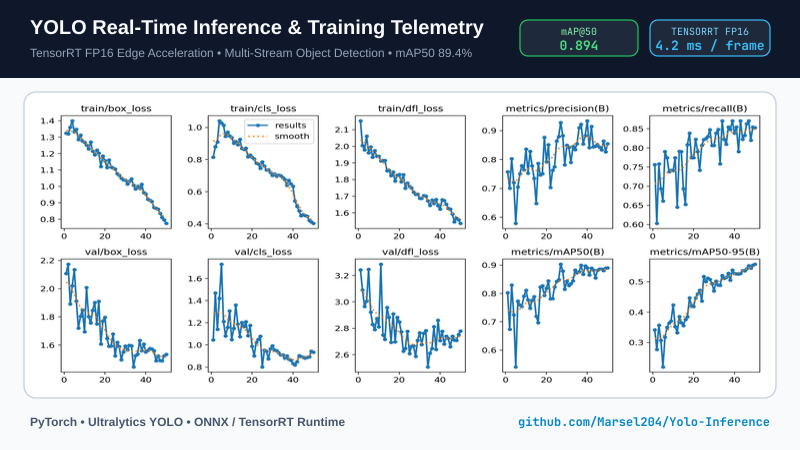
YOLO Inference Real-Time Pipeline
High-throughput YOLO inference pipelines optimized for low-latency vehicle and object detection in edge computing environments.
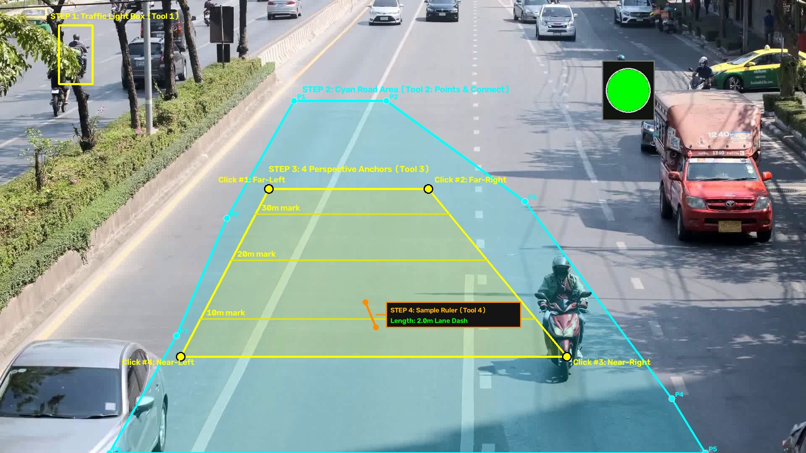
DeploySkripsi (ATSC Edge Runtime on Jetson)
Undergraduate thesis production edge runtime for Adaptive Traffic Signal Control on NVIDIA Jetson Orin Nano with YOLO11 tracking, Sugeno ANFIS control, and RS-485 actuation.
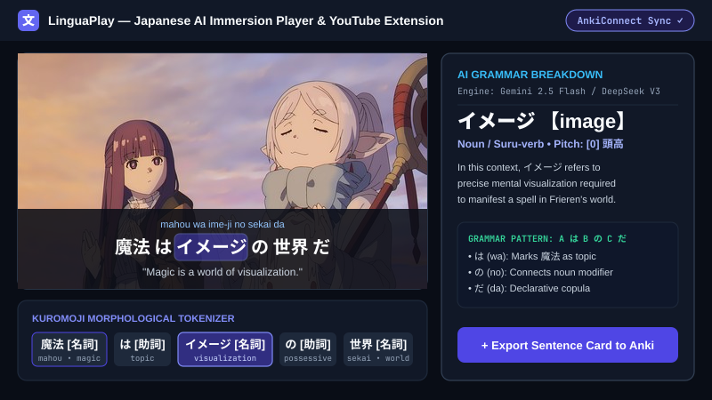
LinguaPlay — Japanese AI Immersion Player & Extension
AI-enhanced Japanese language immersion video player and YouTube subtitle companion featuring Kuromoji tokenization, multi-provider LLM explanations (Gemini & DeepSeek), and Anki sync.
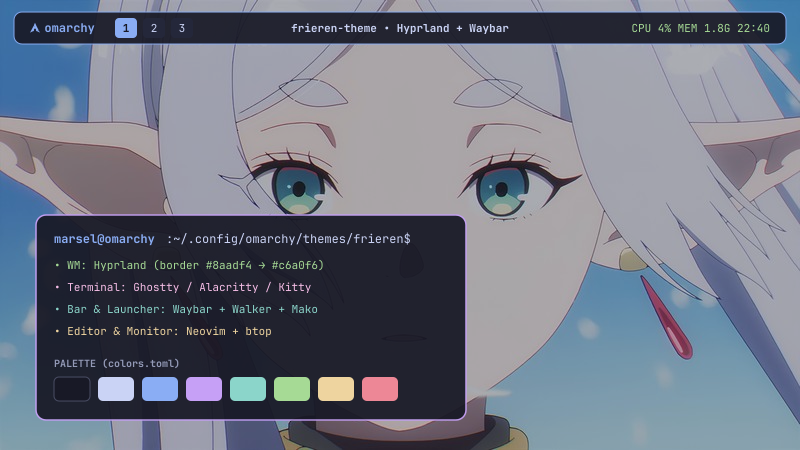
Frieren Omarchy Theme
Minimalist desktop aesthetic theme inspired by Frieren for Omarchy Linux environments, with custom palette styling, status bar colors, and UI assets.
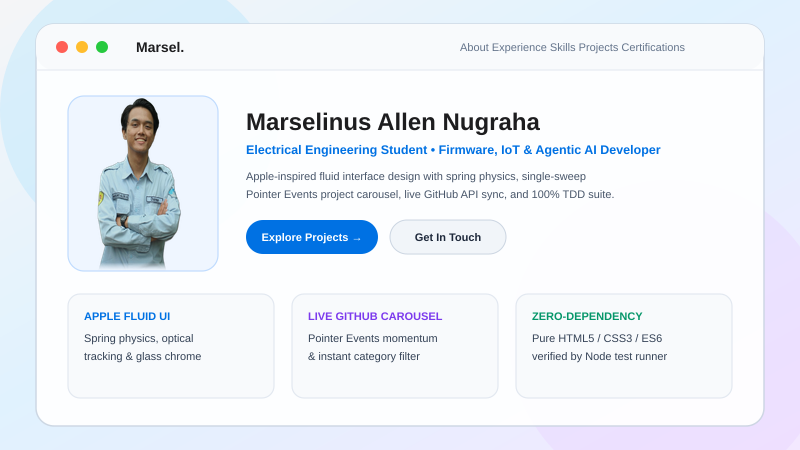
Interactive CV & Engineering Portfolio
Modern, high-performance responsive CV and engineering portfolio landing page built with pure CSS holographic iridescent theme and single-sweep project carousel.
Certifications & Credentials
Professional courses, industry badges, and laboratory appointments

Code Generation and Optimization Using IBM Granite
IBM SkillsBuild

Python for Data Science, AI & Development
IBM & Coursera

AutoCAD Electrical Software Training Program
Himpunan Mahasiswa Teknik Elektro (HMTE) UPNVJ
Credential ID: 001/SRT-PES/PROPELSOFTWARE/UN61/HMTE/VIII/2025

Certified Laboratory Assistant – Fisika Dasar
Laboratorium Teknik Elektro UPN "Veteran" Jakarta
Semester Genap T.A 2024/2025 • SK/4526/UN61/HK.03.01/2025

Certified Laboratory Assistant – Sistem Digital
Laboratorium Teknik Elektro UPN "Veteran" Jakarta
Semester Genap T.A 2024/2025 • SK/4526/UN61/HK.03.01/2025

Certified Laboratory Assistant – Rangkaian Listrik
Laboratorium Teknik Elektro UPN "Veteran" Jakarta
Semester Ganjil T.A 2025/2026 • SGAS/159/UN61/2025/FT

Certified Laboratory Assistant – Dasar Elektronika
Laboratorium Teknik Elektro UPN "Veteran" Jakarta
Semester Ganjil T.A 2025/2026 • SGAS/160/UN61/2025/FT

Adjunct Professor Program Committee
Program Studi Teknik Elektro UPN "Veteran" Jakarta
Credential ID: SERTF/546/UN61/2025/FT
Let's Connect & Collaborate
Open to embedded firmware development, IoT engineering, agentic AI systems, and technical collaborations.